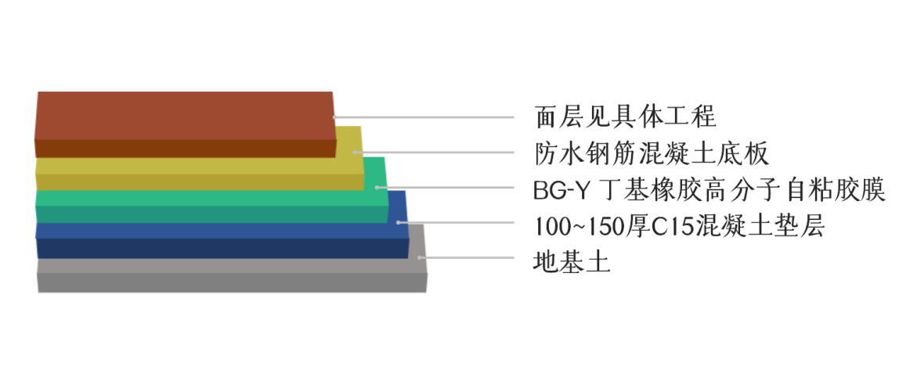
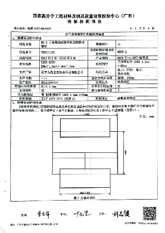
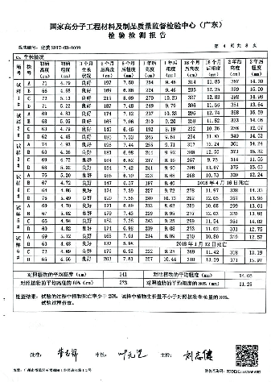

当前位置：
当前位置：
防水行业一直流传着一句话：“三份材料，七分施工”，而现如今，又有一种新的声音，是“七分材料，三分施工”。两个说法，各自都有各自的道理，但是究其根本，其实就是两点，一是要严选防水材料，二，是要监管防水施工，都是为了能够让建筑寿命更长久，而我们辽宁九鼎宏泰防水科技有限公司认为，这，不仅仅是技术的革命，这将是一场旷日持久的战争，属于我们防水行业的战争。故而，黑将军，BLACK
GENERAL 诞生了。
黑将军防水系统 ≠ 黑将军防水材料系列
整体的房屋模型与其搭配的黑将军防水系统材料
这是一个整体的房屋模型，从最上面的斜屋面，到阳台，到不上人的平屋面，最后到地下室的顶板底板侧墙，黑将军防水系统全部能提供对应的材料。
如果全部采用黑将军防水系统里的材料进行施工的话，有一个非常大的好处，就是不同部位施工接茬，由同材质材料进行本体自粘衔接，就能够封闭成完美的防水构造。
黑将军防水系统应用
地下室底板
推荐材料：BG-Y丁基橡胶高分子自粘胶膜

在地下室底板中，我们建议采用黑将军丁基橡胶高分子自粘胶膜防水卷材。用预铺反粘法，单层1.2mm厚即可达到国家防水一级标准
地下室侧墙
推荐材料：BG-C丁基橡胶非固化防水涂料 + BG-W丁基橡胶高分子自粘防水卷材
地下室侧墙，先采用黑将军丁基橡胶非固化防水涂料加黑将军丁基橡胶高分子自粘防水卷材复合做法，卷材涂料形成一个整体，优势互补，达到完美的防水效果
种植顶板
种植顶板，使用黑将军丁基橡胶非固化防水涂料加黑将军丁基橡胶耐根穿刺自粘防水卷材复合做法。黑将军耐根穿刺自粘防水卷材同时具备物理和化学双重的阻根效果。并且，九鼎宏泰的耐根穿刺已经通过国家认可机构的耐根穿刺测试，拥有检验报告，是目前唯一一家具有丁基橡胶耐根穿刺检验报告的防水材料厂家。
 

辽宁九鼎宏泰防水科技有限公司丁基橡胶耐根穿刺防水卷材检测报告
平屋面（非上人）
推荐材料 ①：BG-C丁基橡胶非固化防水涂料 + 丁基橡胶外露膜自粘防水卷材
推荐材料 ②：BG-C丁基橡胶非固化防水涂料 + DPU-E脂肪族聚氨酯防水涂料
在非上人屋面中，有两个推荐，也是黑将军防水系统中的主打产品，第一种是使用黑将军丁基橡胶非固化防水涂料加黑将军丁基橡胶外露膜自粘卷材复合做法，可以不做保护层，直接外露，寿命可以达到
50 年。
非上人屋面施工的第二种推荐做法，是两层 1.5
mm厚的DPU-E外露聚氨酯防水涂料，即可达到一级防水，同样不需要保护层，且寿命可以达到 30
年。以上这两种产品，都完美的符合了住建部对于屋面防水不得低于20年的最新规定！